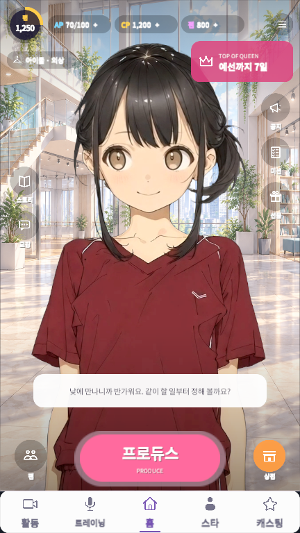

A NEW DAY WITH HIBIKI
TOP OF
1:1 대화의 자유 입력에는 준비된 대사로 답해요.
진행과 대화 기록은 이 브라우저에 저장됩니다. 글을 쓸 때는 브라우저 입력창이 열려요.
TOP OF
QUEEN
오늘의 이야기부터, 다음 무대까지.
설치 없이 바로 플레이
대화·방송·육성을 체험하는 프로토타입1:1 대화의 자유 입력에는 준비된 대사로 답해요.
진행과 대화 기록은 이 브라우저에 저장됩니다. 글을 쓸 때는 브라우저 입력창이 열려요.